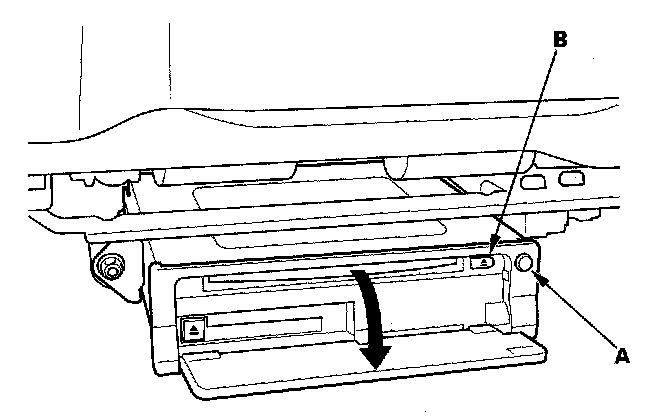

Navigation System: Service and Repair
DVD-ROM ReplacementNOTE: When the DVD-ROM is re-inserted or replaced, a map match must be done.
1. Turn the ignition switch ON (II).

2. Push the open button (A) of the navigation unit located under the driver's seat.
3. Press the EJECT button (B).
4. Remove the DVD-ROM.
5. Insert the new DVD-ROM with the white label facing up.
6. Close the front cover. Do not turn the ignition switch OFF; watch the navigation screen until the data is downloaded to the navigation unit.